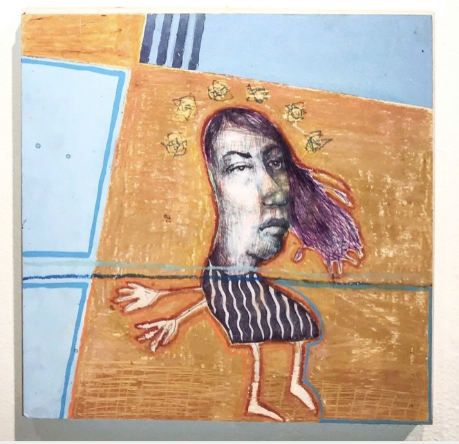

Some Nights You Dance with Tears in Your Eyes
Abby French
Oil Pastel, Acrylic, and Ink on Paper
10”x10”
About the Work :: Abby French’s pieces are often drawings done with various medias collaged onto acrylic paintings, because She is drawn to the visual depth unique to mixed media. Portraits with narrative are important to her, specifically those related to love because she is fascinated by the endurance of human relationships. She wishes to further explore her identity as a woman with a chronic illness, focusing heavily on the chronic pain involved with Fibromyalgia, and how this has affected her idea of youth and reaching adulthood. Parts of her pieces are left slightly unfinished, while other parts are highly rendered. This juxtaposition is paired with a conversation between innocence and maturity in subject matter.
**SOLD**